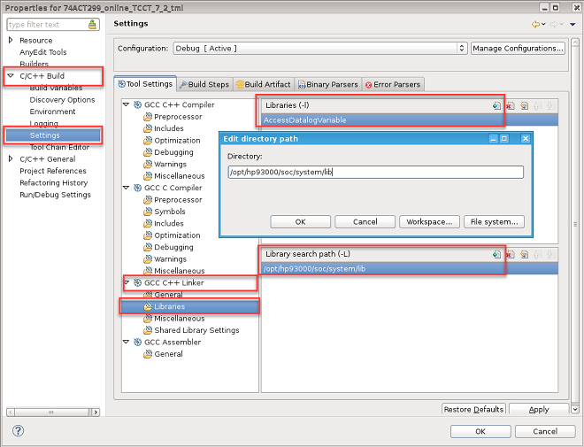

System library for recipe
The libAccessDatalogVariable.so is a system library which provides functions for setting and getting lot variables in recipe files.
This system library is located in /opt/hp93000/soc/system/lib/ by default.
This system library provides the following functions:
- SetDatalogVariable: sets recipe lot variables.
- GetDatalogVariable: retrieves the lot variables.
The declaration in code as
follows:
extern "C"
{
long SetDatalogVariable(char* name, char* value);
long GetDatalogVariable(char* name, char* value);
}Usage
Method 1:
- Put the library file to the device test method library fold, for example, /device/testmethod/sh_lib-EL7-64bit/preload/.
- Add the declaration at the beginning of your code:
See the code example below.
Method 2:
- Add an entry in your Makefile to link the library, for example, -L path -lAccessDatalogVariable.
- Add the declaration to your code.
To link the library, you can also right-click the project in Project Explorer and go to the Properties option in SmarTest:

Refer to the library linking steps as described in Setting up for using driver sharing APIs.
Examples
A sampleClass code
#include "testmethod.hpp"
#include "mapi.hpp"
using namespace std;
extern "C"
{
long SetDatalogVariable(char* name, char* value);
long GetDatalogVariable(char* name, char* value);
}
class sampleClass: public testmethod::TestMethod {
protected:
virtual void initialize()
{
...
}
virtual void run()
{
char* name ="var1";
char origValue[10];
GetDatalogVariable(name, origValue);
cout << " origValue: " << origValue << endl;
char* value="samplecontent123";
SetDatalogVariable(name, value);
char newValue[10];
GetDatalogVariable(name, newValue);
cout << "newValue : " << newValue << endl;
return;
}
...
};
REGISTER_TESTMETHOD("sampleClass", sampleClass);
Setup in
recipe
<lot_variables> <variable name="var1" value="12345" /> </lot_variables>
Functional changes
- Introduced in SmarTest 7.5.4